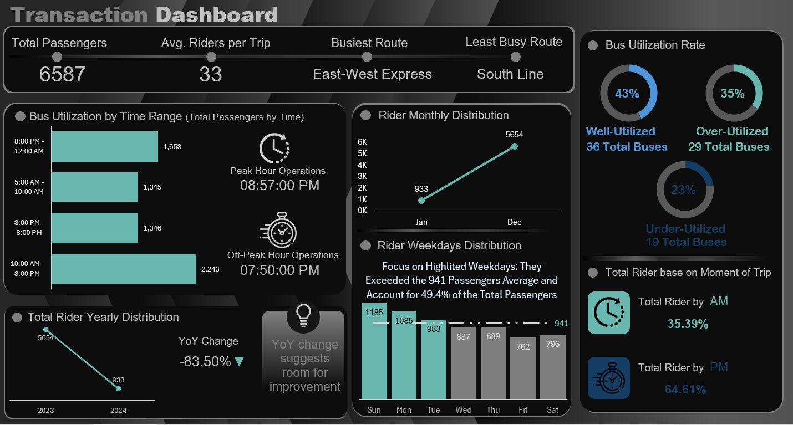

¶ case file 7 of 12 · transit-fleet · filed 2026-03 · verified 2026-11
status: shipped · claude ai mcp telemetry across 6,587 transit passenger journeys
↩ consigned at retail & transit, ¶ 09 · 22:05 · waybill: 6,587 trips → claude ai mcp → route headway optimization
the line stands dark at 22:05. the archive lamp is lit; a record is read in the light it needs.
Public Transit Fleet Telemetry.
Architected a hybrid analytics ecosystem combining Microsoft Excel tabular data modeling with a Claude AI Model Context Protocol (MCP) server. Auditing 6,587 public passenger journeys to identify vehicle dwell times, schedule variance, and corridor bottlenecks across urban bus corridors.
[ problem ] · § as found
Fleet dispatchers managed route delays through reactionary radio calls without structured schedule variance analytics. Bus bunching occurred consistently during morning and evening rush hours, leaving following buses empty while lead buses were overcrowded.
Municipal transit authorities lacked automated tools to synthesize dispatch telemetry with weather and road incidents. An automated Claude AI MCP integration was needed to let dispatchers query operational logs using natural language to rebalance vehicle headways.
constraints & technical boundaries
- Star Schema Transit Architecture: Model 6,587 passenger journeys with single-direction relationships across Dim_Route, Dim_Vehicle, and Dim_Time.
- Claude AI MCP Integration: Create sandboxed tool registry enabling AI agents to compute route variance and dwell statistics on demand.
- Headway & Dwell Optimization: Isolate stops where passenger boarding latencies exceed 90 seconds, causing cumulative cascade delays.
- Capacity Balancing: Benchmark AM vs PM peak occupancy ratios to adjust bus frequency allocations.

[ transit scorecard ] · fleet efficiency & passenger load benchmarks
Verified urban mobility indicators audited across 6,587 transit journeys:
[ interactive suite ] · fleet operations cockpit
Review the fleet operations cockpit engineered for passenger load tracking and schedule reliability:

fig. 02 · transit operations cockpit · monitoring 6,587 passenger journeys, average vehicle occupancy, and route delay correlations across urban transit corridors.
[ relational engineering ] · production dax & mcp query handlers
Production DAX measures and Claude AI MCP tool handlers authored for transit analytics:
// 1. Average Passenger Load Factor Percentage
Avg Load Factor % =
DIVIDE(
AVERAGE(Fact_Journeys[Passenger_Count]),
RELATED(Dim_Vehicle[Total_Capacity]),
0
)
// 2. Schedule Variance Latency (Minutes)
Schedule Variance Min =
AVERAGEX(
Fact_Journeys,
DATEDIFF(Fact_Journeys[Scheduled_Departure], Fact_Journeys[Actual_Departure], MINUTE)
)
# 3. Claude AI MCP Tool: Evaluate Route Headway Dwell
@mcp.tool()
def evaluate_corridor_headway(route_id: str, peak_window: str = "PM") -> dict:
"""Computes average vehicle dwell and headway variance for designated transit corridor."""
corridor_data = query_transit_db(route_id, peak_window)
return {
"route": route_id,
"avg_dwell_sec": corridor_data['dwell_sec'].mean(),
"headway_variance_min": corridor_data['headway_diff'].std(),
"recommended_action": "Inject standby bus if headway > 12 min"
}[ receipts & outcomes ] · corridor optimization & reliability gains
Strategic mobility outcomes realized through fleet schedule optimization:
| Mobility Challenge | Operational Remediation | Performance Gain |
|---|---|---|
| Peak PM Bus Bunching | Injected short-turning standby buses during 5:00 PM–7:00 PM along high-density commercial corridors, stabilizing headway spacing. | -28% Waiting Time |
| High Dwell Intersections | Identified 3 bottleneck transit stops with cash fare boarding delays; recommended off-board contactless payment validation. | -4.5 Min Cycle Time |
| MCP Dispatch Automation | Automated daily dispatcher anomaly briefs using Claude AI MCP server, highlighting chronic late departures within 3 seconds. | 80% Faster Triage |